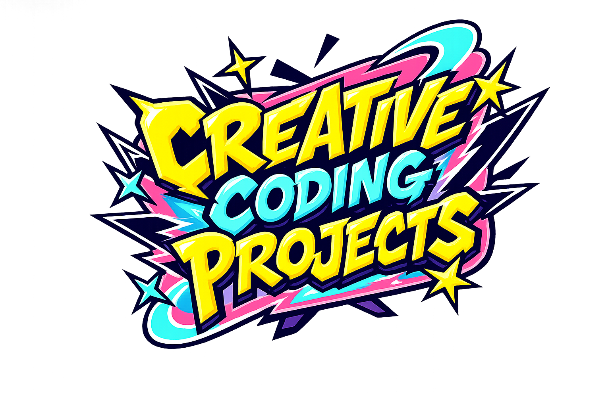
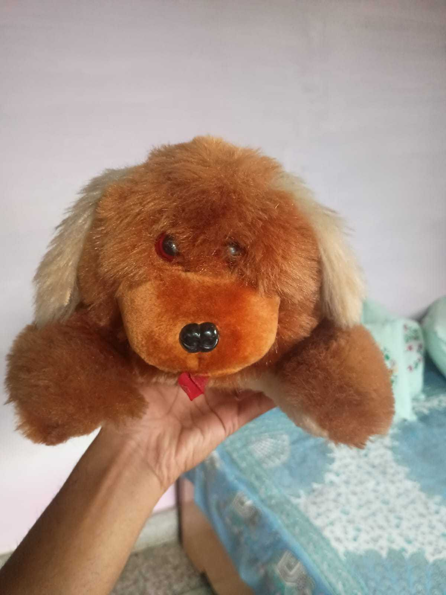

This was a collaborative exercise where we worked in pairs.
One person described a childhood toy purely through words — no images, no gestures.
The other had to recreate that toy only from imagination.
After completing the sketch, we finally revealed the actual toy and compared the results.
The goal was to explore how perception, memory, and communication shape visual outcomes.
Actual Toy Reference

This project explores generative design using randomness and interaction.
The face is built using parameters controlled by functions like
random(), mousePressed(), and keyPressed().
Every interaction produces a new variation — turning a simple face into an evolving system.
It highlights how small logic changes can create endless visual diversity.